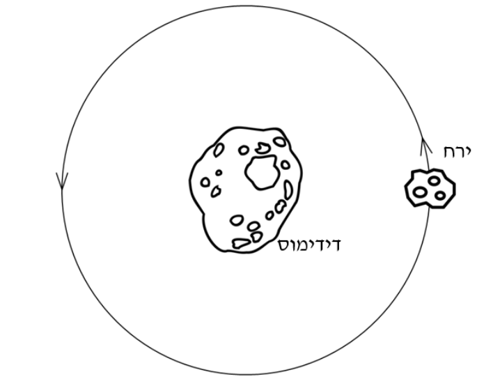
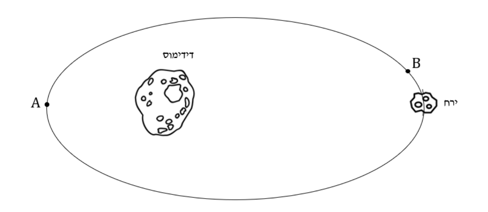

דידימוס (Didymos) הוא אסטרואיד במערכת השמש. לדידימוס יש ירח המקיף אותו כל 11.9 שעות במסלול מעגלי שרדיוסו R = 1,200 m (ראו איור א').

qimage-1.png
איור א'
א.
חשבו את מהירותו הקווית של הירח. (9.33 נקודות)
ב.
חשבו את מסת האסטרואיד דידימוס. (8 נקודות)
ג.
אילו הירח היה נע במסלול מעגלי סביב האסטרואיד ברדיוס כפול, כיצד היה משתנה זמן המחזור שלו? (8 נקודות)
משימת החלל DART של נאס"א, היא משימה שמטרתה להסיט את הירח של דידימוס ממסלולו. במשימה תשוגר חללית שתתנגש בירח חזיתית. החוקרים מצפים שלאחר ההתנגשות החללית והירח ינועו יחד וייכנסו למסלול אליפטי סביב האסטרואיד (ראו איור ב').

qimage-2.png
איור ב'
ד.
כאשר הירח נמצא במסלול אליפטי סביב האסטרואיד, באיזו נקודה, A או B, מהנקודות המופיעות באיור ב', הוא ינוע מהר יותר? נמקו היטב את תשובתכם. (8 נקודות)